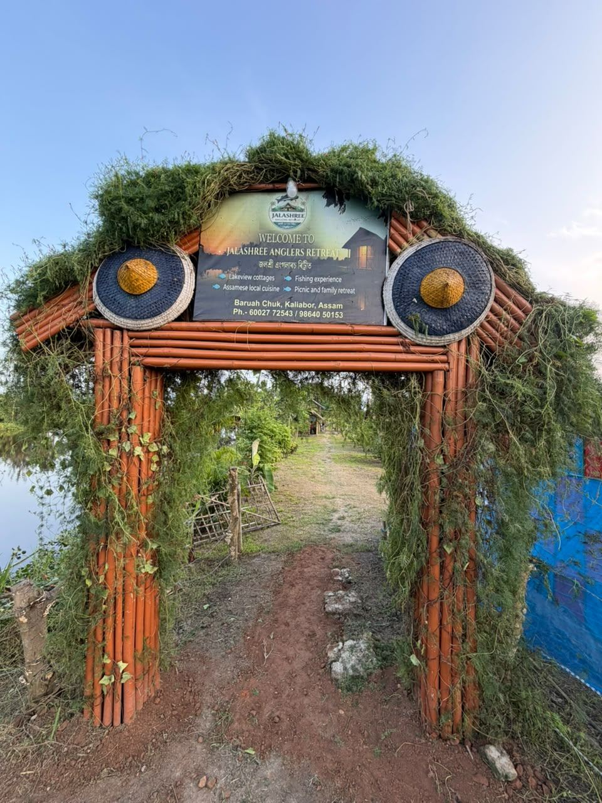

Stay
Tents and thatch by the water
Stay
Tents and thatch by the water
 The day
Fishing, meals and picnics
The day
Fishing, meals and picnics

The entrance Jaapi, bamboo and the gate signJalashree sits at Baruah Chuk, on open grounds in Kaliabor. The gate is bamboo, with two jaapis. About the place